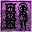
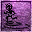
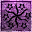

|  |
- Strength
- Affects weapon damage, carrying capacity, and increases weapon degradation upon each successful hit. It also increases maximum Fatigue and starting Health.
|
| |
- Intelligence
- Affects maximum Magicka, and Alchemy and Enchanting results.
|
| |
- Willpower
- Affects spellcasting success rate and resistance to Magicka (Paralyze and Silence). It also determines maximum Fatigue.
|
|  |
- Agility
- Affects weapon hit rate, evasion, resistance to staggering and knock down, and success rate of Sneaking, Pickpocketing, Lockpicking, Blocking, and Jumping. Agility also affects maximum Fatigue.
|
| |
- Speed
- Affects character movement speed (i.e. walking, running, swimming, and levitating).
|
| |
- Endurance
- Affects starting health, amount added to max health per level, and your maximum Fatigue. Also slows down fatigue loss while running, and while fighting.
|
| |
- Personality
- Affects success rate of persuasion and haggling. Increases your initial disposition with characters and can alleviate initial hostility.
|
|  |
- Luck
- Affects everything you do in a small way, but governs no skills. Luck affects every "dice roll" in the game: an example of this is whether or not your blow will land when you attempt to hit an enemy.
|